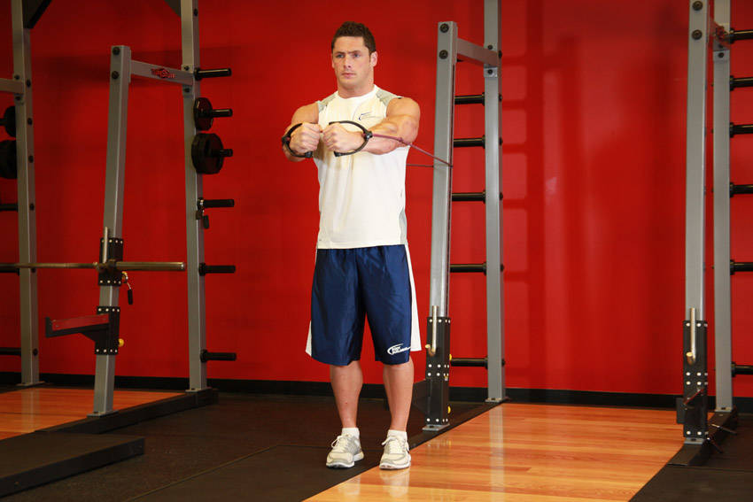

- Secure an exercise band around a stationary post.
- While facing away from the post, grab the handles on both ends of the band and step forward enough to create tension on the band.
- Raise your arms to the sides, parallel to the floor, perpendicular to your torso (your torso and the arms should resemble the letter "T") and with the palms facing forward. Have them extended with a slight bend at the elbows. This will be your starting position.
- While keeping your arms straight, bring them across your chest in a semicircular motion to the front as you exhale and flex your pecs. Hold the contraction for a second.
- Slowly return to the starting position as you inhale.
- Perform for the recommended amount of repetitions.